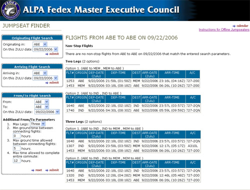

|  |
What I did...
I developed this simple application with ASP.NET and VB.NET for FDX. This application allows pilots to find a "jumpseat". In addtion to designing and programming this application I wrote a DTS script to transfer and transform the data from a flat file to SQL Server tables. |